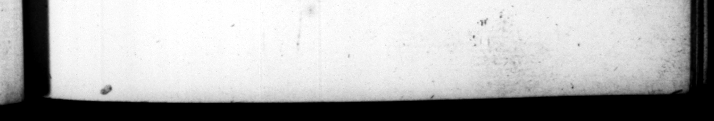

D. OC TAN AUGUST. 70 ſtupro mexicum, Item ucinus Marci frater, quali udicitiam delibatam à Czare, A. etiam Hirtio in Hiſania CCC millibus nummum ubſtraveric : ſolituſque ſit crura ſuburere nuce ardentt, 1 mollior pilus ſurgeret. & populus quondam univerſus ludorum die, & accepit in contumeliam ejusg enſu maximo cumprobavir verſum in ſcena pronuntia* ” * * 97 profits ut ian. Lucia too, | Mark her, twitt him mi the ſame and 22 he bad fir a gratification of ;4 * hundred t heuſand ſefterces, been h1 ſervant to Aulus Hirting in 71 424 way, in Spain ; and uſcd eg fruge Ig: with the flame of 7 to the hair come (ofter. Nay the body the perple too, upon occaſray of ſome p 2s f lick diverſions in the theatr when the foliwing verſe came up, relating 1s 4 72 of the not ber of rhe Gags heating 'r drums, | tum de Gallo matris Deum tympanizante, | Fideſue ut cinadus orbem digits temperet ! See how the catamite his orb commands! : took it as deſigned to affront him, and ſignified their approbation of it with huge apolauſe. 69. Taste auido exercuiſſe, ne amici quidem negane : excuſantes ſane, non ibidine, fed ratione commilfa, quo facilius confilia adverlariorum per cujuſque mulieres exquireret, Marcus Antonius ſuper feſtinatas Livie nuptias objecit, & faeminam conſularem e triclinio viri coram in cuhiculum abductam, rurſus in convivium rubentibus auriculis, incompt ĩore capillo reductam: & dimiſſam Scriboniam, quia liberiug doluiſſet nimiam potentiam 2 : & conditio · nes quæſitas per amicos, qui matres familias & 2 e tate virgines denudarent, atq; perſpicerent, tanquam Tho141110 mangone yendente. Scribit etiam ad ipſum hoc fa. miliariter adhuc, - nec dum plane inimicus, aut hoſtis. Quid te mutavit ? quod vegi nam ineo? uxor mea ef. 2” . an abhinc anunos novem £ tu deinde ſolam Druſillam inis? ta valeas uti tu, hanc epiſtolam cum leris, non. imeris Tertullam, aut Terentillam, aut Ruflam, aut Salviam Titi» cemam, aut omnes. Anne refert ubi & in quam arrigas ? mination of their per ns, Ju 69. That be was guilty of the practice of adultery, his friends themſelves f"-tend not to deny, but alledge by way of excu(e for it, that he engaged there n wot ou: of luf, but policy, in order te come the mor- eaſily to 4 diſcovery of the deſerns of his enemies by their wives, M. Anthony ouer and abowe the hay marriage of Livia, charges him with taking the of 4 conſular gentleman from his table, and in the Preſence of her husband, into a bedchamber, and bringing her ggcain to th entertainment, with her red ears wry red, ond her hair in great di ſor der 3 tha: reſenting with ſome freedom 7 be had put away N fer 2 exceſſeve ſway a miſtreſs of his had with _ And thai po were 775 loyed to p. or him, accerd= obl; 4 both matrons and virgins to 7 in order to a fair exain the ſame manner, as 1 ius the dealer in ſlaves had had them under ſale. And before they came to an op n rupture, he writes to him in a familiar m mmer thus. What has altered you? that I ly with a Queen ? ſhe is m wife, Is this a novel thing wit! me, or have I not dons ſo for this nine years? and do you take a freedom with Druſilla only ? may health and happineſs attend you, as you have ne'er a bout with ** O
